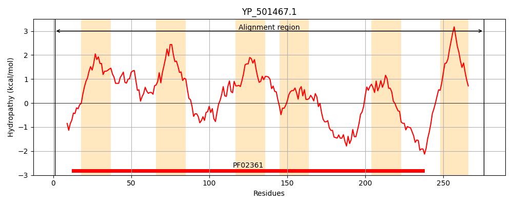
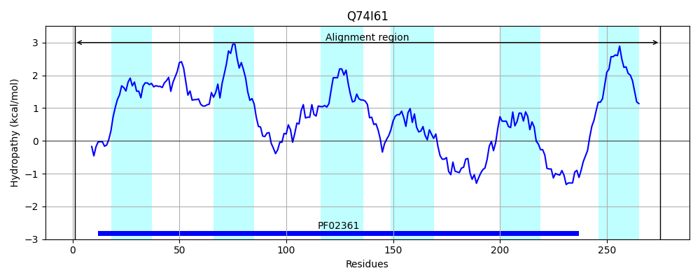
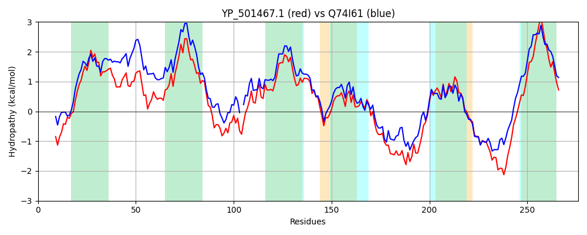

Hit Accession: Q74I61
Hit TCID: 3.A.1.29.1
Hit Description: gnl|BL_ORD_ID|15313 gnl|TC-DB|Q74I61|3.A.1.29.1 ABC transporter permease component OS=Lactobacillus johnsonii GN=LJ_1705 PE=4 SV=1
Mach Len: 276
e:0.000000
Query TMS Count : 6
Hit TMS Count: 6
TMS-Overlap Score: 5.500000
Predicted Substrates:None
BLAST Alignment:
Score: 870 , Bit scores: 339 bits, E-value: 2.9e-118, Alignment length: 276, Percentage identity: 60
Query: 1 MNQYNTIGFHPGNSRIHQLNATVKLLFLLVVSISAMVTYDTRYLILISASSILLVKYAHIEWKQVRFVVKFILFFTILNIIAVYIFDPEYGVKIYNQRTELVNGIGRFTLTSQELFYLFNLILKYISTVPLALIFLFTTNPSHFAASLNQLGVNYKISYAVSLALRYIPDIQETYFNISQAQQARGYDNSKKAKFTSRVKGIKRIVLPLIFSSIERIDTISTAMELRQFGQYKRRTWYVKKQLKKDDYVVLCLTLILLMLVVTLFFLNNSRYFNPW 276
MN +G+ PGNS IH LNAT K++FL++VSI+ MVTYDTR+LI I S++L+K A I+WKQV F+VKFI+ F I+NIIAV+IF P YG +Y+ +T L+N G FTLT+QELFYLFN+ILKYI ++PL L+FL TTNPS FAASLN++GV+YK++YAVSLALRYIP+IQE+Y++IS AQQARG + SKKA R+ G IV PLIFSS++RIDTISTAM+LR+FG K+RTWYV + DY+V L IL+++V+ LF +N+ R++NP+
Sbjct: 1 MNDSKILGYQPGNSFIHALNATTKMIFLILVSIACMVTYDTRFLIAICILSLILLKIAGIKWKQVSFIVKFIIVFAIINIIAVFIFQPTYGETLYHSKTVLINA-GYFTLTAQELFYLFNVILKYICSIPLVLLFLLTTNPSQFAASLNKIGVSYKVAYAVSLALRYIPNIQESYWSISAAQQARGNELSKKASLGKRIHGTLNIVTPLIFSSLDRIDTISTAMQLRRFGSKKKRTWYVAENFNLADYLVTTLAFILVLVVILLFKVNSGRFYNPF 275 | Protein Hydropathy Plots: |
|---|
|  |  |
Pairwise Alignment-Hydropathy Plot:
|
|---|
|  |